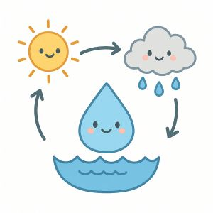

Capítulo 1: El Despertar en el Río
Había una vez una pequeña gota de agua llamada Gotita vivía feliz en un río de agua H2O que corría entre montañas verdad y planos llenos de flores.
Cada mañana, el sol la saludaba con sus rayos dorados y los peces jugaban a su alrededor
-¡Hola, Gotita! - decía el pez Nemo - ¿Listo para otro día de aventuras?
-¡Claro! - respondía Gotita, rebotando suavemente sobre las olas - Me encanta viajar con el río
Pero un día, algo mágico pasó. El sol brilló con más fuerza que nunca y Gotita sintió un cosquilleo en todo su cuerpo.
-¡Ay! - dijo - ¡Me siento más ligera!
De pronto empezó a elevarse lentamente como si tuviera alas invisibles. ¡Estaba evaporándose!
Y así, Gotita subió y subió, hasta convertirse en una pequeña nube blanca en el cielo.
Para saber más sobre el ciclo del agua, visita este enlace

Capítulo 2: Una nube esponjosa
Allá arriba Gotita no estaba sola. Conoció a muchísimas otras gotas de agua que también habían subido desde ríos aguas y mares. Se tomaron todas las manos y juntas formaron una nube grande y esponjosa como de algodón. ¡Era muy divertido flotar juntas en el cielo, empujadas por el viento!"¡Que blandita es nuestra casa nueva!", decían riendo. A esto, una gota más sabia le explicó que se llama condensación. La nube se hizo más y más grande a medida que llegaban más gotas
Capítulo 3: El regreso al hogar
Una por una, comenzaron a caer de nuevo hacia la tierra en forma de lluvia. ¡Y a esto se le llama precipitación! Después de mojar el bosque, Gotita comenzó a fluir por un pequeño arroyo.
- ¡Bienvenida de vuelta, Gotita! -, dijo el río con un murmullo.
Y así ,Gotita continuó su viaje en el gran ciclo del agua, lista para volver a subir, caer y ayudar a la tierra a vivir